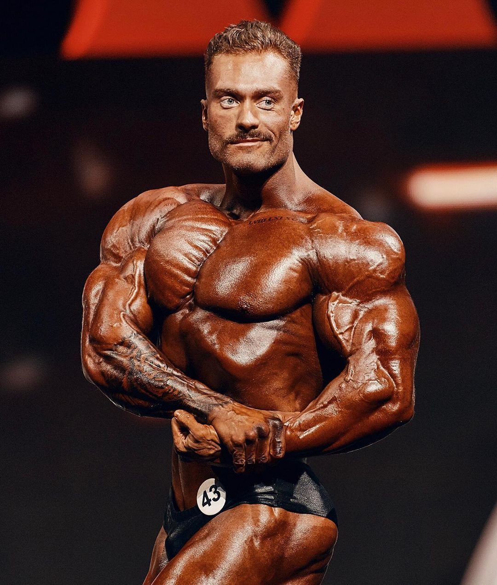

CHRIS BUMSTEAD (CBUM)

Christopher Adam Bumstead, noto anche con lo pseudonimo di CBum (Ottawa, 2 febbraio 1995), è un culturista canadese.
Ritenuto il miglior talento della sua generazione, è entrato nel circuito IFBB nel 2016. Dal 2017 gareggia nella
categoria Classic Physique del concorso di Mister Olympia, dove è vincitore di cinque titoli di campione, tutti di fila (2019, 2020, 2021, 2022, 2023).
Biografia
È nato nella città canadese di Ottawa, figlio di Jeff e Mary Bumstead, nonché fratello minore di Melissa Bumstead, anche lei culturista. Avvicinatosi al mondo dello sport fin da piccolo, durante l'adolescenza pratica diverse discipline quali calcio, baseball, pallacanestro e hockey su ghiaccio.
Scopre la passione per il culturismo all'età di 14 anni e più tardi inizia ad allenarsi sotto la guida di Iain Valliere, marito della sorella, che intravide il suo potenziale. Ancora oggi, Chris attribuisce a Iain Valliere il merito di essere la sua principale fonte di ispirazione e l'uomo responsabile di averlo guidato verso il successo di cui gode attualmente.
Prima di immergersi completamente nel mondo del culturismo, Chris ha confessato di aver ponderato la possibilità di intraprendere una carriera da fisioterapista. Tuttavia, anche dopo molte speculazioni, non ha trovato una forte mentalità per perseguirla. Durante gli anni universitari, Chris, tra le aule e qualche festa di troppo, ha bilanciato il suo impegno accademico, svolgendo attività lavorative sia in una palestra che in un negozio di integratori.
Successo

Esordisce sul palco all'età di 21 anni e nel 2016 conquista la tessera IFBB da professionista grazie alla vittoria dei campionati nordamericani nella categoria dei pesi massimi. In seguito a questo evento, ha iniziato a ricevere diversi contratti di sponsorizzazione, tra cui quello con Gymshark, e ha ottenuto visibilità in varie riviste di fitness e servizi fotografici.
Successivamente compie il suo ingresso nella categoria Classic Physique (letteralmente "fisico classico") — divisione che rispetto all'open pone maggiore enfasi sulla bellezza fisica e nella quale gli atleti cercano pertanto di esibire corpi che ricordano l'era classica del bodybuilding, divenendone subito uno dei principali esponenti.
Prima di conquistare il titolo di Mr. Olympia nella categoria del Classic Physique nel 2019, Chris si classificò al secondo posto sia alla sua prima apparizione nel 2017 che alla seconda nel 2018. In entrambe le occasioni, è stato superato da Breon Ansley.
Le 5 vittorie consecutive al Mr. Olympia hanno incrementato notevolmente la sua visibilità tanto da renderlo uno dei personaggi più famosi e seguiti nel mondo del fitness e del bodybuilding.
Il successo gli ha consentito di fondare aziende dedite alla produzione e commercializzazione di integratori e bevande energetiche. Infatti Chris è proprietario del marchio Raw Nutrition con sede a Stuart, in Florida; del marchio Bum Energy; ed è inoltre ambasciatore dell'azienda anti-invecchiamento R3VIVE.